3.3.4. BSP问题¶
BSP开源工程：https://gitee.com/sophon-ai/bsp-sdk
3.3.4.1. BSP SDK¶
所谓SoC mode是指BM1684片内的CPU运行嵌入式Linux系统，主要的业务软件运行在这个系统上，通过以太网与外部进行业务数据交互。与之相对的是PCIe mode，即BM1684作为一张PCIe加速卡插入到主机上，主要的业务软件运行在主机上，只是把视频编解码、图像处理、神经网络推理等工作offload到BM1684上做硬件加速。 BSP SDK是BM1684 SoC模式产品最主要的软件开发资料：https://gitee.com/sophon-ai/bsp-sdk。使用方式请查看README.md文件。特别请留意里面提供了一个网盘链接，其中有一份《算丰SM5系列AI计算模组的SOC模式软件开发指南》（以下简称SM5指南），这份文档提供了很多基础的信息，在本文档中就不再赘述了。SM5指南也可以从 官网链接 获取。 本文档作为SM5指南的补充，适用于如下产品：
SM5系列产品
预装box版本软件（即没有人脸识别应用）的SE5产品（预装gate版本软件的SE5产品在很多地方会有不同，如无特别说明，通常不适用，不清楚的地方请咨询技术支持）
客户采购BM1684芯片制作的SoC模式产品
3.3.4.2. SM5使用时过热的情况¶
答：SM5模组二次开发，需要设计完整的散热方案，包含散热器和风扇。单纯依靠模块自身时其不能正常工作，具体参考设计方案请参考如下说明
3.3.4.2.1. SM5MW（SM5）散热设计说明¶
答：
图 3.1 SM5M结构刨面图¶
注意
请勿拆除SM5MW的金属外壳，包括上壳和下壳
只要拆除一次散热部件，导热界面材料就不能重复使用
如SM5M结构刨面图中的①号点代表SM5MW的壳温测试点，任何情况下使用SM5MW，请确保该点测量温度值不超过85℃(SM5M:75°)
SM5M结构刨面图中的②号点代表BM1684结温，通过内置的温度传感器读取上报值。任何情况下使用SM5MW，请确保该点上报温度值不超过95℃(SM5M:85°) | SM5M的热性能参数要求参考下表
表 3.1 SM5M热阻¶ 参数
说明
SM5M热阻
工作模式：17.6TOPS
Rjc
0.5℃/W
Rjb
6.34℃/W
计算热阻：
为了确定SM5M需要的散热方案热阻Rca，首先根据以下公式计算Tc（即SM5M结构刨面图 散热结构示意图中的①号点温度）
\[Tjmax=Power x Rjc+Tc\]说明：各参数取值如下
Tjmax=105℃(SM5M:85°)（即SM5M结构刨面图散热结构示意图中的②号点最大工作温度限值，长期工作温度建议采用95℃(SM5M:85°)
Rjc=0.5℃/W
Power：SM5M功耗需要通过底板测试得出
查看Ta的值。Ta=SM5M正常工作时所要支持的最高环境温度。
根据以下公式，计算SM5M正常工作所需要的散热方案热阻
\[Rca=（ Tc-Ta） /Power\]说明：为了保证SM5M正常工作,请用户确保设计的散热方案热阻在最恶劣情况下小于上述计算值
3.3.4.2.2. SM5W（SM5）散热设计说明¶
答：
图 3.2 SM5W结构刨面图¶
注意
请勿拆除SM5W的金属外壳
只要拆除一次散热部件，导热材料就不能重复使用
如SM5W结构刨面图中的①号点代表SM5W的壳温测试点，任何情况下使用SM5W，请确保该点测量温度值不超过85℃(SM5:75°)
SM5W结构刨面图中的②号点代表BM1684结温，通过内置的温度传感器读取上报值。任何情况下使用SM5W，请确保该点上报温度值不超过95℃(SM5:85°) | SM5W的热性能参数要求参考下表
表 3.2 SM5W热阻¶ 参数
说明
SM5W热阻
工作模式：17.6TOPS
Rjc
0.5℃/W
Rjb
6.34℃/W
计算热阻：
为了确定SM5W需要的散热方案热阻Rca，首先根据以下公式计算Tc（即SM5W结构刨面图 散热结构示意图中的①号点温度）
\[Tjmax=Power x Rjc+Tc\]说明：各参数取值如下
Tjmax=105℃(SM5:90°)（即SM5W结构刨面图散热结构示意图中的②号点最大工作温度限值，长期工作温度建议采用95℃(SM5M:85°)
Rjc=0.5℃/W
Power：SM5W功耗需要通过底板测试得出
查看Ta的值。Ta=SM5W正常工作时所要支持的最高环境温度。
根据以下公式，计算SM5W正常工作所需要的散热方案热阻
\[Rca=（ Tc-Ta） /Power\]说明：为了保证SM5W正常工作,请用户确保设计的散热方案热阻在最恶劣情况下小于上述计算值
3.3.4.2.3. SM5模块散热参考设计¶
答：
当SM5采用被动散热设计(仅靠自带的散热器模块)，主机侧必须提供风扇来为模块散热，需满足的风量及风压设计要求如下表所述, 建议参数如下
表 3.3 SM5对主机侧的风量散热要求（针对常温芯片）¶ 入风口平均温度/℃
进风口需求最低风速/CFM
最小压降/inch H2O
70
16
0.21
60
8
0.18
50
4.2
0.09
40
3
0.07
35
2.2
0.06
< 30
1.8
0.05
表 3.4 SM5对主机侧的风量散热要求（针对宽温芯片）¶ 入风口平均温度/℃
进风口需求最低风速/CFM
最小压降/inch H2O
70
10
0.17
60
5
0.13
50
2.8
0.08
40
2.1
0.05
35
1.6
0.04
< 30
1.3
0.02
当使用SM5作为纯被动散热组件使用时，自身带的散热器无法满足散热需求，需要客户重新设计散热器以满足散热需求，参考散热器尺寸如下
备注
以最高环境温度70°为例
纯被动散热温度可能达到极限,具有一定的风险,条件允许,建议采用主动散热设计
环境温度70度，需求的散热器最小尺寸约为：250(L)*200(W)*30(H）mm，其中齿高不能低于25mm，齿间距不能小于5mm
散热器与芯片接触的地方不能使用导热垫，推荐使用导热硅脂或液态金属导热材料
散热表面需要做增加辐射的表面处理(比如阳极氧化，喷涂石墨碳等等)
散热器材质：除去普通的铝材散热材料外，建议与芯片接触的地方增加热管，VC等具有较高导热能力的材质为芯片快速均匀散热
3.3.4.3. BSP常见问题¶
3.3.4.3.1. 日志文件太大怎么办¶
答：系统运行中的日志保存在/var/log目录下，包括用户态的syslog，内核态的kern.log等文件。系统默认有开启logrotate服务，触发周期为1天，当logrotate触发时，它会把当前的syslog等日志文件压缩，依次保存成syslog.1、syslog.2.gz、syslog.3.gz等等，序号最多到7。所以按这个机制，如果您在一天内频繁打印了太多日志，就有可能使得日志文件过大，占满磁盘空间。如果确实有打印大量日志的需求，sudo logrotate -f /etc/logrotate.conf可以强制触发一次logrotate，或者可以按照下图将logrotate的策略从daily改成类似“size 10M”这样，就可以把lograte改成按照日志文件大小来触发：
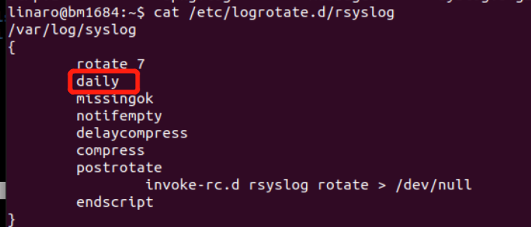但这里要注意的是，logroate是通过/etc/cron.daily/logrotate触发执行的，而只有当它执行时才会去检查上面这些规则文件， 所以如果只在上面配置文件里修改成hourly或者size 10M，并不能直接生效。需要首先sudo mv /etc/cron.daily/logrotate /etc/cron.hourly，让logrotate每小时执行一次，它才有机会去检查/etc/logrotate.conf文件，进而执行您修改后的更激进的设置。
3.3.4.3.2. 如何控制看门狗¶
基于BM1684芯片的产品在板上都会有一颗STM32 MCU，它的主要任务是给BM1684芯片上下电，然后顺便承担了其他一些功能，比如这里要介绍的看门狗。BM1684和STM32之间有一条I2C总线连接，BM1684做master，STM32做slave，BM1684通过发送I2C消息来做踢狗的动作。BM1684在每个CPU核上绑定一个线程，只有当所有线程都活着时才会周期性踢狗，即任何一个CPU核挂死都会引起看门狗超时，STM32会复位BM1684。 可以通过如下命令来控制这个看门狗：
echo ‘enable’ > /dev/bm-wdt-0 |
启用看门狗功能 |
echo ‘disable’ > /dev/bm-wdt-0 |
禁用看门狗功能 |
echo ‘auto’ > /dev/bm-wdt-0 |
启动内核线程自动周期性踢狗的动作 |
echo ‘manual’ > /dev/bm-wdt-0 |
关闭内核线程自动周期性踢狗的动作 |
echo ‘kick’ > /dev/bm-wdt-0 |
手动触发一次踢狗 |
echo ‘timeout 30’ > /dev/bm-wdt-0 |
设置看门狗超时时间，超过这个时间没有收到踢狗消息，看门狗就复位BM1684 |
echo ‘interval 20’ > /dev/bm-wdt-0 |
设置内核线程自动踢狗的周期 |
3.3.4.3.3. windows操作SD卡分区导致SD卡无法升级问题¶
答：
串口log上可以看到：
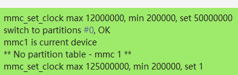还有一种情况是用windows 分区不正确，串口log上会卡在SD init就没了：
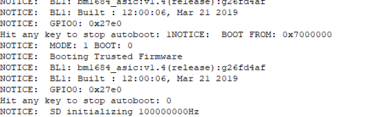这两种情况需要：
Ubuntu 系统可以使用disk工具/fdisk 添加新卷，然后格式成fat；
Win10 需要用磁盘管理（也可用Diskgenius工具）删除卷再添加新卷，然后格式成fat。
确保SD在SE5/SM5中使用 sudo fdisk -l 显示成：
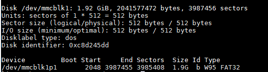从v10.4.0版本之后的u-boot已经可以兼容这种SD卡文件系统，无需进行特别处理。
3.3.4.3.4. 不同规格的BM1684 Soc mode产品区别¶
答：为了适应不同算力需求的应用场景，BM1684 SoC mode产品提供了如下几种规格：
DDR容量 |
CPU频率 |
TPU频率 |
VPU / JPU / VPP 频率 |
|
|---|---|---|---|---|
16路产品 |
总计12GB，其中 TPU：4GB VPU：2GB VPP：3GB |
2.3GHz |
550MHz （0.62V） |
640MHz |
8路产品 |
总计6GB，其中 TPU：1.2GB VPU：1GB VPP：1.7GB |
2.3GHz |
330MHz （0.55V） |
400MHz （Video decoder/JPEG/VPP 只有一半硬件单元） |
4路产品 |
总计4GB，其中 TPU：1GB VPU：0.5GB VPP：0.7GB |
2.3GHz |
330MHz （0.55V） |
400MHz （Video decoder/JPEG/VPP 只有一半硬件单元） |
3.3.4.3.5. ion_allocate_buffer failed错误如何处理¶
答：如果程序运行时打印了类似这种log：
kernel: [4] ion alloc (3133440,2,0) dma_buf_fd failed fd:-24
kernel: [4] ion_ioctl ion alloc failed, fd=-24, from yolov5s_demo
run.sh[8326]: [ion_malloc:386] ioctl ION_IOC_ALLOC failed. [error=Too many open files].
run.sh[8326]: [ion_allocate_buffer:132] ion_malloc failed!
run.sh[8326]: [VDI] fail to vdi_allocate_dma_memory size=3133440
run.sh[8326]: AllocateDecFrameBuffer:1081 fail to allocate frame buffer
run.sh[8326]: [VDI] invalid buffer to free address = 0x0
run.sh[8326]: InstIdx 3: BMVidDecSeqInitW5 failed Error code is 0xffffffff
可见关键字“fd=-24”、“error=Too many open files”。这个是因为我们使用ION管理内存，而ION又依赖于dma_buf，后者会对每个分出来的buffer分配一个fd进行管理。系统对同时处在打开状态的fd总数是有限制的。
如果有遇到这个问题，请执行ulimits -n，检查“open files”那一行是否为20480。如果不是的话，请再检查/etc/security/limits.conf文件，是否有如下两行：
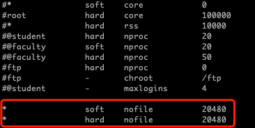如果没有的话，请添加后重启，对在shell里敲命令启动的进程应该就会生效了。
如果上述方法没有解决问题，请先通过ps命令获取业务进程ID，然后cat /proc/$pid/limits，检查“Max open files”那一行是否为20480，如果不是的话，请在直接启动您业务程序的shell脚本（比如上面log示例里的run.sh）开头添加“ulimit -n 20480”。重新运行业务，通过cat /proc/$pid/limits复核是否修改成功。
如果以上方法都检查了没问题，那可能您的确申请了太多buf，可以通过上述方法继续增大max open files数量。但最大也不应超过cat /proc/sys/fs/file-max显示的数量。
3.3.4.3.6. 如何修改IP地址¶
答：SM5默认搭载的是Debian系统，双网口中的eth0默认是动态获取IP的（即DHCP），eth1是固定成了192.168.150.1。 后者的配置是通过/etc/network/interfaces.d/eth1文件完成的，这个文件是我们对Debian原始网络配置唯一的修改。 即：如果您删掉这个文件，那么eth1会变成跟eth0一样的DHCP获取IP；如果您想要把eth0也固定IP，就依样在/etc/network/interafces.d文件夹下创建一个eth0文件。 重启后生效。注意最好不要把两个网卡配置成同一网段，可能会有奇奇怪怪的问题。
如果SM5搭载的是Ubuntu系统，则配置文件在/etc/netplan/01-netcfg.yaml文件中，修改完后可以通过sudo netplan apply命令生效。 更多详细配置信息，可以查询netplan工具的使用，与PC版Ubuntu系统是一样的。
3.3.4.3.7. 如何查看网口速率¶
答：使用ethtool eth0 查看网口速率等信息，如下：
root@BH0003-host:# ethtool eth0
Settings for eth0:
Supported ports: [ TP MII ]
Supported link modes: 10baseT/Half 10baseT/Full
100baseT/Half 100baseT/Full
1000baseT/Full
Supported pause frame use: No
Supports auto-negotiation: Yes
Supported FEC modes: Not reported
Advertised link modes: 10baseT/Half 10baseT/Full
100baseT/Half 100baseT/Full
1000baseT/Full
Advertised pause frame use: No
Advertised auto-negotiation: Yes
Advertised FEC modes: Not reported
Link partner advertised link modes: 10baseT/Half 10baseT/Full
100baseT/Half 100baseT/Full
1000baseT/Full
Link partner advertised pause frame use: Symmetric
Link partner advertised auto-negotiation: Yes
Link partner advertised FEC modes: Not reported
Speed: 1000Mb/s
Duplex: Full
Port: MII
PHYAD: 0
Transceiver: internal
Auto-negotiation: on
Supports Wake-on: d
Wake-on: d
Current message level: 0x0000003f (63)
drv probe link timer ifdown ifup
Link detected: yes
Speed: 1000Mb/s 为速率。如果没有ethtool工具，使用安装apt-get update;apt-get install ethtool
3.3.4.3.8. 使用K3S遇到问题¶
答：使用k3s，出现k3s管理的pods开机启动会CrashLoopBackOff，使用journalctl -u k3s查看日志，发现这个错误：
kmod_search_moddep() could not open moddep file '/lib/modules/4.9.38-bm1684-v10.3.0-00528-g8be6792/modules.dep.bin'
而盒子上是/lib/modules/4.9.38-bm1684-v7.3.0-00469-g49e7e2dd。
此错误是由于使用部分升级的方式，升级了kernel。但是文件系统没有升级导致的不匹配。需使用sd卡刷机的方式全升级。
3.3.4.3.9. SE5上使用QT输出图形界面¶
答：SE5上的HDMI输出并没有使用标准的framebuffer驱动，所以公版的QT并不能直接使用，请从https://github.com/sophon-ai-algo/sophon-qt 获取我们修改过的QT版本进行开发，此版本的QT可以正确输出到SE5的HDMI上。
3.3.4.3.10. apt update时出现public key无效提示¶
答：如果在apt update时遇到如下错误：
The following signatures couldn't be verified because the public key is not available: NO_PUBKEY 6AF0E1940624A220
可以参考如下步骤解决：
到OpenPGP Keyserver网站：https://keyserver.ubuntu.com/，在文本框里输入错误提示里“NO_PUBKEY”后面那串字符，要加上“0x”前缀，形如“0x6AF0E1940624A220”，点击Search Key按钮，得到结果如下图
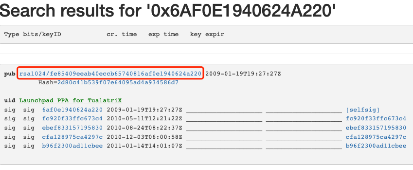点击“pub”后面那个链接，如上图红框部分，得到对应的key，如下图：
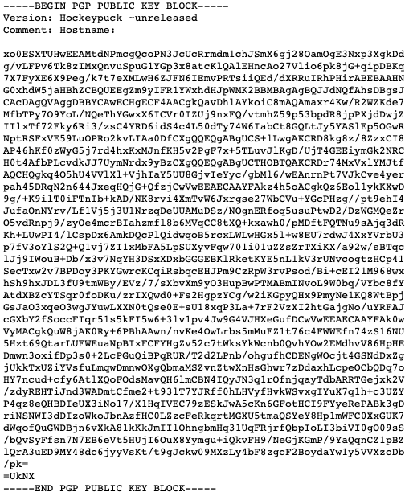复制此页面里的所有文本，保存成一个文件放到板子上，如pgp.key
在板子上执行sudo apt-key add pgp.key，正常应该会得到一个“OK”提示。再重新执行sudo apt update即可。
3.3.4.3.11. 上电后无log输出¶
请检查核心板的LED指示灯是否有亮起，如果没有，请和硬件设计人员检查核心板供电。如果LED指示灯有亮起，请检查UART连接是否正常，可以尝试交换Tx/Rx，请留意UART为TTL电平，建议使用CP210x系列芯片的USB转接线。并请检查UART终端的软件设置：
{kind=link}
另外也请留意核心板是否有过热的情况。如果硬件正常， BM1684X 芯片的boot ROM一定会打印一些log出来。
如果能看到log，但敲命令没反应，请把flow control设置为none。
如果上电开机就自动进入了命令行（提示符#），请检查串口线连接是否妥当，PC上的串口设置中flow control是否为none。如果还是总出现这种情况，建议更换串口线和PC试试看。
3.3.4.3.12. eMMC上的文件系统损坏（“变砖”）¶
BM1684X 的SD卡烧写功能是固化在boot ROM内的，因此即便eMMC上的文件系统损坏，您还是可以通过SD卡刷机功能重新烧录eMMC。
如果您不想完全重新烧录，可以尝试进入recovery mode做一些修复尝试。步骤如下：
接上串口终端，在看到u-boot提示Hit any key to stop autoboot时按下回车
进入u-boot的命令行模式，看到提示符bm1684#
输入run recboot后回车
可以看到一个简单的linux系统跑起来了，它是完全工作在ramdisk上的，故此您可以对eMMC上的分区做e2fsck等操作
如果想要恢复出厂设置，您可以清空根文件系统的read-write部分（注意这会让您丢失除/system和/data目录下的全部东西）：
mdev -s mount /dev/mmcblk0p5 /mnt rm -rf /mnt/* sync reboot -f
如果想要修正read-only分区里的内容：
mdev -s mount /dev/mmcblk0p4 /mnt cd /mnt # 修改文件后： sync reboot -f
如果想要恢复有问题的内核镜像：
mdev -s mount /dev/mmcblk0p1 /mnt cp /mnt/emmcboot_backup.itb /mnt/emmcboot.itb # emmcboot_backup.itb是原始镜像里就预装有的备份文件 sync reboot -f
如5.2节介绍，recovery mode存储于eMMC上的第二个分区，如果这个分区也有损坏就无法使用了。
3.3.4.3.13. SD卡的兼容性¶
因为目前boot ROM的限制， BM1684X 仅支持使用MBR分区表，不支持GPT。您可以通过如下方式来检查是不是这种情况：
将SD卡插到一台Ubuntu PC上，打开Disks应用，查看下图中Paritioning的信息，如果显示GUID Partition Table就是GPT分区表，显示Master Boot Record就是MBR分区表：
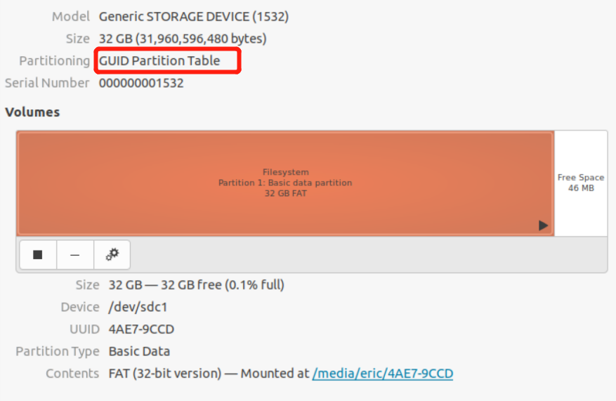{kind=link}
如果是GPT分区的，您把现有分区删光，重新建立分区，默认就会使用MBR分区表。
因为目前u-boot的限制， BM1684X 不能使用那种没有分区表，直接放了一个FAT32文件系统的SD卡。您可以通过如下方式来检查是不是这种情况：
将SD卡插到一台Ubuntu PC上，打开Disks应用，观察是否有下图所示删除分区的减号按钮，如果没有的话，则u-boot不能识别。
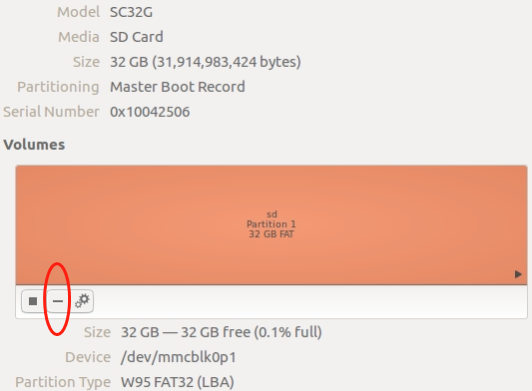{kind=link}
如何避免出现这种情况？这种SD卡通常发生在Windows上。如果您的SD卡因为某种原因发生了数据损坏，插到Windows PC提示需要格式化：
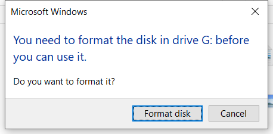{kind=link}
请不要直接在这里点格式化。请运行compmgmt.msc，打开计算机管理，选择磁盘管理，在右侧的磁盘列表中找到SD卡（分区类型显示为RAW），然后右键菜单选择删除卷：
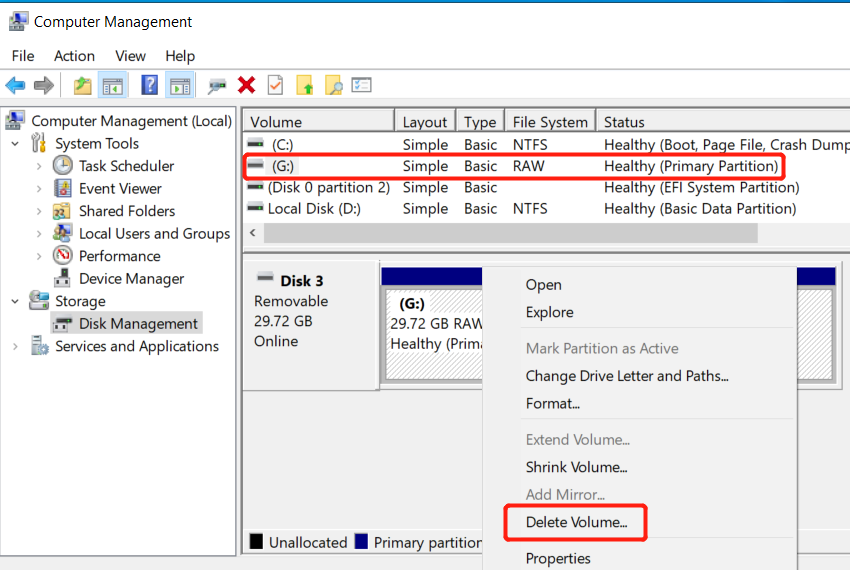{kind=link}
删除卷后，SD卡会变为未分配状态：
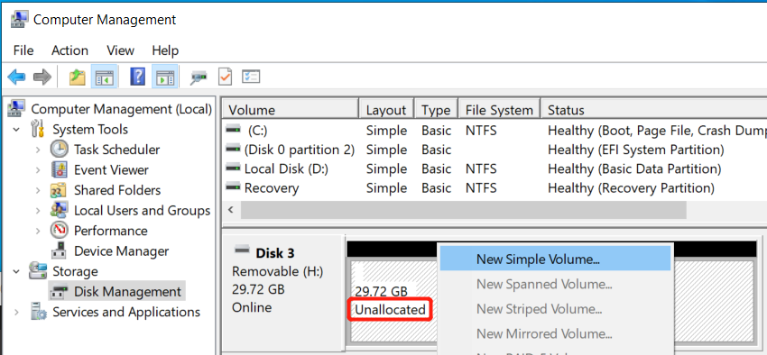{kind=link}
此时再右键菜单选择新建简单卷，按照向导提示进行，注意文件系统类型选择FAT32，其余均保持默认设置即可。
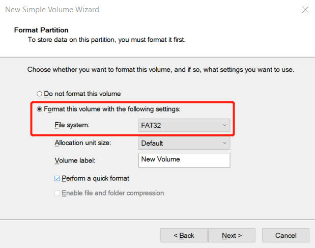{kind=link}
如果您的卡已经存在这个问题，同样也用上述步骤，先删除卷，再新建简单卷即可。
警告
注意这个操作会损坏您卡上的数据，请做好备份。
3.3.4.3.14. 使用tftp刷机¶
警告
TODO: evb板子的网口在uboot下需要直连才能ping通
除了前文介绍的SD卡刷机方式之外。 BM1684X 的u-boot也支持通过以太网和tftp协议刷机。请注意tftp使用的刷机包与SD卡是不同的。
首先需要搭建基础的网络环境：将 BM1684X 和一台PC机放在同一个路由器下（直连也可以）。此处假设路由器IP是192.168.0.1，PC机IP是192.168.0.2。在PC机上安装tftp server：如果是Ubuntu系统，apt-get install tftpd-hpa tftp-hpa，然后查看/etc/default/tftpd-hpa文件中的TFTP_DIRECTORY路径为何，将刷机包拷贝进去（您也可以修改这个路径配置，sudo service tftpd-hpa restart后即可生效）；如果是Windows系统，可以使用tftpd64.exe，图形界面，无需安装，同样需要将根目录指向刷机包所在位置。tftp server搭建好后，您可以用另一台PC先测试一下，避免网络、防火墙等配置问题。
警告
推荐尽可能使用Ubuntu系统，Windows下的tftpd64对环境比较挑剔，在传输大文件时有时会不稳定，造成升级失败。
然后我们启动 BM1684X ：
接上串口终端，在看到u-boot提示Hit any key to stop autoboot时按下回车
进入u-boot的命令行模式，看到提示符bm1684#
输入：
set ipaddr 192.168.0.200 set gatewayip 192.168.0.1 set serverip 192.168.0.2 tftp 0x310000000 boot.scr source 0x310000000
此处，ipaddr是设置 BM1684X 的IP，注意不要冲突；serverip是tftp server所在PC机的IP；gatewayip是路由器的IP，如果 BM1684X 和PC机是直连的，则也写成PC机的IP即可。
正常的话您可以看到tftp开始下载和刷机了，一切结束后，和SD卡刷机一样会提示您reset BM1684X 。
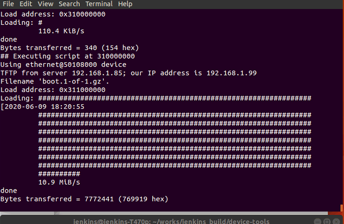
{kind=link}
3.3.4.3.15. 文件系统变成只读的处理方法¶
如果进入Ubuntu后发现无法写入任何文件，敲mount命令后发现根目录被挂载成了只读的状态：
overlay on / type overlay (**ro**,relatime,lowerdir=/media/root-ro,up perdir=/media/root-rw/overlay,workdir=/media/root-rw/overlay-workdir)
此时请检查开机的串口log是否有如下错误：
[ 3.796601] [5] overlayfs: failed to create directory /media/root-rw/overlay-workdir/work (errno: 28); mounting read-only
再请检查df -h命令的输出是否可见第五分区被用光了：
/dev/mmcblk0p5 25.9G 5.9G 0 100% /media/root-rw
若以上现象均吻合，请进入/media/root-rw/overlay目录，删除一些文件（通常是/home/linaro或者/var/log目录下，可以用du -h –max-depth=1命令来看一下），然后重启即可恢复正常。因为第五分区容量有限，如果用比较大的文件，建议存放到/data目录下，不要直接放在/home/linaro目录下。
3.3.4.3.16. 大容量存储需求¶
如果您有大容量存储的需求，可以考虑如下方案（以我们的参考底板为例）：
挂载NFS文件系统
准备一台Ubuntu PC机，与 BM1684X 放在同一个局域网内，在Ubuntu PC上做如下准备工作：
建立NFS文件系统的根目录，如/home/share/nfsroot
安装NFS服务
sudo apt-get install nfs-kernel-server sudo vim /etc/exports # 在最后添加一行：/home/share/nfsroot *(rw,sync,insecure,no_root_squash,no_subtree_check) sudo /etc/init.d/rpcbind restart sudo /etc/init.d/nfs-kernel-server restart sudo exportfs -r
在本机测试是否配置成功，执行：
sudo mount -t nfs localhost:/home/share/nfsroot /mnt
正常应该没有任何报错，在/mnt下可以看到/home/share/nfsroot的内容
在 BM1684X 上执行，假定Ubuntu PC机的IP为192.168.1.100:
mount NFS目录到/mnt目录
sudo apt update sudo apt install nfs-common sudo mount -t nfs -o nolock 192.168.1.100:/home/share/nfsroot /mnt
正常应该没有任何报错，在/mnt下可以看到Ubuntu PC机上/home/share/nfsroot的内容
3.3.4.3.17. 如何修改内存布局¶
参考 SoC模式内存修改工具 修改内存。
下文为原理参考
BM1684X 的内存布局描述定义在device tree中，device tree会在编译后打包进板卡上的/boot/emmcboot.itb文件中。故如果您有bsp-sdk，可以直接修改板卡对应的device tree文件。如果您不想从源代码构建自己的镜像，我们也提供了两种方式修改板上现有的device tree。
在开始修改之前，先介绍一下 BM1684X 的DDR设计，和device tree设计。
3.3.4.3.18. BM1684X 的DDR设计¶
BM1684X 有4个 channel，分别为DDR0A、DDR0B、DDR1和DDR2。其中DDR0A和DDR0B做了交织，以获得更大的带宽，故从软件的角度可以简化为DDR0、DDR1、DDR2三块内存区域。其中：
DDR0：主要给TPU使用，地址范围0x1_0000_0000 – 0x2_FFFF_FFFF
DDR1：主要给Linux和VPU使用，地址范围0x3_0000_0000 – 0x3_FFFF_FFFFF
DDR2：主要给VPP和JPU使用，地址范围0x4_0000_0000 – 0x4_FFFF_FFFF
BM1684X 支持如下几种内存配置：
16GB内存：DDR0 8GB、DDR1 4GB、DDR2 4GB
12GB内存：DDR0 4GB、DDR1 4GB、DDR2 4GB
8GB内存：DDR0 4GB、DDR1 2GB、DDR2 2GB
目前在售的 BM1684X 均为12GB内存的版本。此处要注意的是，每个DDR channel的起始地址是固定的，所以当内存小于16GB时，每个DDR channel从start_addr + size到下一个DDR channel的start_addr - 1的地址区间没有对应的物理内存，不能使用。
每个DDR channel上都有一些固定分配好的区域，不支持用户自行修改，具体如下：
DDR0：从0x1_0000_0000到0x1_0510_0000的空间分配给了ARM9使用
DDR1：从0x3_0000_0000到0x3_1410_0000的空间分配给了Linux kernel的一些固定用途。从0x3_1410_0000开始还需要给Linux kernel预留一些空间，目前工具里预设为512MB。
综上，可以让用户自行修改的主要有如下几个区域：
DDR0上的TPU区域
DDR1上的VPU区域
DDR2上的VPP/JPU区域
用户可以根据自己的业务使用状况对上述三个区域进行调整，注意并不能跨DDR channel，比如TPU的区域，只能在DDR0上，并不能扩展到DDR1上。也即这三个区域的大小上限为每个DDR channel的实际物理内存大小减去前述的固定分配区域。除了这三个区域以外的内存，默认都交给Linux kernel进行管理，也即所谓系统内存。
另外，可以不分配独立的VPU区域，VPU相关软件检查到这种情况后会自动去使用VPP/JPU区域。如果想要系统内存比较大，可以考虑这种方式。如果想要最大化利用DDR带宽，请保持独立的VPU区域。
3.3.4.3.19. BM1684X 的device tree设计¶
BM1684X 的device tree源码采用了层级结构，源代码位于bsp-sdk/linux-bitmain/arch/arm64/boot/dts/bitmain下，修改时可以参考BM1684的实现，如标准版的BM1684使用的是bm1684_asic_modm.dts文件。可以看到它里面include了如下几个文件：
#include “bm1684.dtsi” → BM1684 SoC芯片的硬件描述
#include “bm1684_mm_12g.dtsi” → 对应12GB物理内存的布局描述
#include “bm1684_asic_mod.dtsi” → BM1684板级的硬件描述
BM1684X 使用单一软件包支持多种板卡产品，每张板卡都有自己对应的device tree文件来描述内存容量、外设选择等不同的配置。Bootloader会在开机时通过读取的板卡硬件型号，选用对应的device tree。所有的device tree文件都被打包到emmcboot.itb文件中，也即一个emmcboot.itb文件中，包含了一个kernel image，一个ramdisk，还有十多个板卡的device tree文件。
emmcboot.itb使用its文件来描述打包进去的文件名和顺序，源码位于bsp-sdk/ramdisk/build/bm1684_asic/workspace/multi.its.base。在板卡上也存放了一份在/boot/multi.its。正常情况下/boot目录下的emmcboot.itb和multi.its文件是匹配的，除非曾经单独升级过某个文件。its文件是向前兼容的，即只会顺序在后面加入新的板卡文件，不会修改或替换前面旧有的。
3.3.4.3.20. 修改源代码¶
修改了device tree文件后，请参考6.3节修改kernel的描述，重新生成emmcboot.itb即可。为了方便操作，如果您不需要考虑多种板卡不同内存布局的话，您可以可以使用bsp-sdk/linux-bitmain/tools/mm_layout下的gen_mm_dts.py脚本（推荐Ubuntu 20.04，python 2.7）来生成一套device tree格式的memoy layout描述文件。运行时会提示您提供如下信息：
物理内存大小
TPU区域大小
是否使用独立的VPU区域，是的话大小为多少
VPP区域大小
执行完毕后在output目录下会生成bm1684_mm_16g.dtsi（内存容量不同，文件名会变化），用它替换linux-source/arch/arm64/boot/dts/bitmain目录下的同名文件，重新编译kernel和emmcboot.itb即可。
3.3.4.3.21. 修改SoC预制的内存布局工具¶
如果您想直接修改当前板卡上的内存布局，请获取工具包 https://doc.sophgo.com/sdk-docs/v23.09.01-lts/docs_latest_release/docs/SophonSDK_doc/zh/html/appendix/2_mem_edit_tools.html
3.3.4.3.22. 板卡类型判断¶
BM1684X 的bootloader会通过若干条件组合判断自己的板卡类型：
读取MCU提供的板卡类型信息
读取MCU提供的板卡硬件版本信息
判断PCIe EP是否有连接到上位机
3.3.4.3.23. 开机后没有自动加载ko文件¶
BM1684X 上预装的ko主要在两个位置：一个是常规的/lib/modules/$(uname -r)/kernel目录，这个是一般Linux系统摆放ko文件的地方，通常kernel会自动按需加载其中的ko；另一个是/opt/sophon/libsophon-current/data下，这里摆放了 BM1684X 的VPU、JPU、TPU驱动的ko文件，开机时会通过一个自动执行脚本（/usr/sbin/bmrt_setup.sh）自动加载。
如果开机后您发现某个/lib/modules下的驱动没有自动加载，比如fl2000.ko、smifb.ko之类，最常见的问题是您替换了/boot/emmcboot.itb，造成当前kernel的版本号，与/lib/modules目录下的名字不一致，于是kernel不能找到自己对应的ko文件。您可以尝试这样做：
cd /lib/modules # 查看当前目录下的文件夹名字，比如是5.4.202-bm1684 # 通过uname -r检查当前kernel的版本号，比如是5.4.203-bm1684，与文件夹名字不一致 ln -s 5.4.202-bm1684 $(uname -r) # 即创建一个以当前kernel版本号为名字的软链接指向原来的文件夹
最后重启系统，如果新旧两版kernel的差异不大的话，驱动可以兼容，通常都可以自动加载驱动了。
3.3.4.3.24. 开机后自动运行业务¶
建议您创建一个开机自启动的服务来实现开机后自动运行您的业务应用。 BM1684X 开机后的一个核心服务是bmrt_setup，它包含如下三个关键文件：
/etc/systemd/system/bmrt_setup.service （服务描述文件） /etc/systemd/system/multi-user.target.wants/bmrt_setup.service（软链接） /usr/sbin/bmrt_setup.sh （执行文件）
您可以参考它的写法。在这个服务中，我们加载了VPU、JPU、TPU等关键驱动，所以请把您的服务放在这个服务后面执行，或者在您的业务逻辑中等待驱动加载完成（可以使用systemd-analyze plot > boot.svg生成一张启动详细信息矢量图，然后用图像浏览器或者网页浏览器打开查看所有服务的启动顺序和耗时）。
如果是简单实验的话，您也可以把应用直接加在bmrt_setup.sh文件末尾，不要加&，否则bmrt_setup.sh执行结束时您的程序也会被杀掉（可以用nohup搭配&解决这个问题）。但这样还有一个问题是用printf打印的log只有当程序结束时才会输出到/var/log/syslog，如果程序是while(1)常驻的，就看不到log，暂解是用fprintf(stderr, “xxx”)来替代printf打印log。
3.3.4.3.25. 使用串口更新SPI flash¶
通常我们都是使用flash_update命令，或者SD卡、tftp刷机的方式来更新SPI flash。但是您在调试u-boot的过程中可能会遇到上述方式都失效的情况，这时可以考虑使用串口命令行来重刷SPI flash。
您需要有一个支持以ymodem协议发送文件的串口终端工具，推荐使用TeraTerm或minicom。下文以Windows上使用TeraTerm为例。
请在上电前就在串口终端中按住F键
给模组上电，正常您应该看到如下的打印效果：
NOTICE: GPIO0: 0 PCIe 368645 NOTICE: BOOT: 7000000/0/0 NOTICE: Booting Trusted Firmware NOTICE: BL1: v2.5(NOTICE: GPIO0: 0 PCIe 111258 NOTICE: BOOT: 7000000/0/0 NOTICE: Booting Trusted Firmware NOTICE: BL1: v2.5(release):bm1686_rom_v6 NOTICE: BL1: Built : 19:08:47, Jan 24 2022 INFO: BL1: RAM 0x10002000 - 0x1000d000 # NOTICE: GPIO0: 0 PCIe 111256 NOTICE: BOOT: 7000000/0/0 NOTICE: Booting Trusted Firmware NOTICE: BL1: v2.5(release):bm1686_rom_v6 NOTICE: BL1: Built : 19:08:47, Jan 24 2022 INFO: BL1: RAM 0x10002000 - 0x1000d000 # fffffffffffffffffff
这时您已经进入了boot ROM的命令行，请多敲几次回车，避免有非法的命令字符干扰
输入ymodem 0x10100000，回车，应该可以看到如下效果：
# NOTICE: GPIO0: 0 PCIe 111252 NOTICE: BOOT: 7000000/0/0 NOTICE: Booting Trusted Firmware NOTICE: BL1: v2.5(release):bm1686_rom_v6 NOTICE: BL1: Built : 19:08:47, Jan 24 2022 INFO: BL1: RAM 0x10002000 - 0x1000d000 # ffffffffffffffffffffffff # ymodem 0x10100000 C
此时请尽快在串口终端中使用ymodem协议发送spi_flash.bin文件：
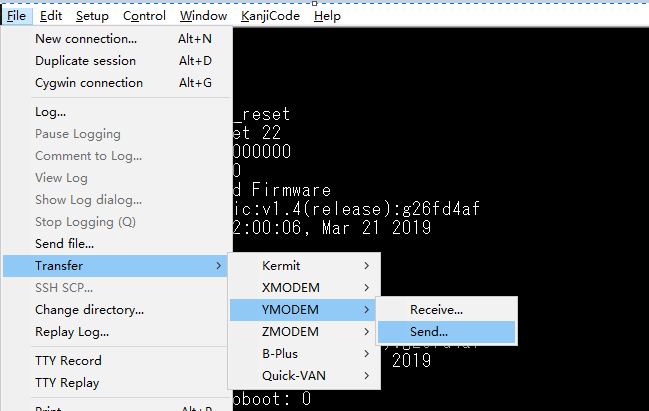然后稍等片刻就应该可以看到文件开始传输了：
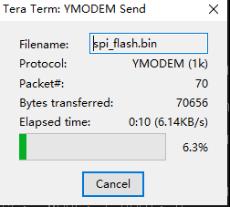等传输结束后可以看到串口有如下显示，如果有任何错误，或者传输文件大小与spi_flash.bin并不一致请重做1-6步：
# ymodem 0x10100000 CCxyzModem - CRC mode, 2(SOH)/985(STX)/0(CAN) packets, 6 retries ## Total Size = 0x000f6074 = 1007732 Bytes #
记住此处打印的Total Size，下一步需要用到
此时输入spif 0x10100000 0x0 0xf6074，回车，稍等片刻就可以看到开始刷写SPI flash了：
# spif 0x10100000 0x0 0xf6074 INFO: SPI flash ID 0x1860c8 INFO: Start erasing 16 sectors, each 65536 bytes... read flash: 0 ff ff ff ff ff ff ff ff ........ INFO: --program boot fw, page size 256 progress: 49%
待刷写过程结束后可以看到：
INFO: --program boot fw success read flash: 0 e0 3 1f aa e1 3 1f aa ........ #
此时敲reset再回车，或者直接下电再上电，重启后就是使用您刚才烧录进入的bootloader版本了，可以通过u-boot打印的编译时间来确认。
{kind=link}
{kind=link}
3.3.4.3.26. 日志文件过大怎么办¶
系统运行中的日志保存在/var/log目录下，包括用户态的syslog，内核态的kern.log等文件。系统默认有开启logrotate服务，触发周期为1天，当logrotate触发时，它会把当前的syslog等日志文件压缩，依次保存成syslog.1.gz、syslog.2.gz、syslog.3.gz等等，序号最多到7。
所以按这个机制，如果您在一天内频繁打印了太多日志，就有可能使得日志文件过大，占满磁盘空间。如果确实有打印大量日志的需求，sudo logrotate -f /etc/logrotate.conf可以强制触发一次logrotate，或者可以按照下图将logrotate的策略从daily改成类似size=10M这样，就可以把lograte改成按照日志文件大小来触发：
{kind=link}
- 目前系统/etc/logrotate.d/rsyslog可能初始设置为size=300M：
- 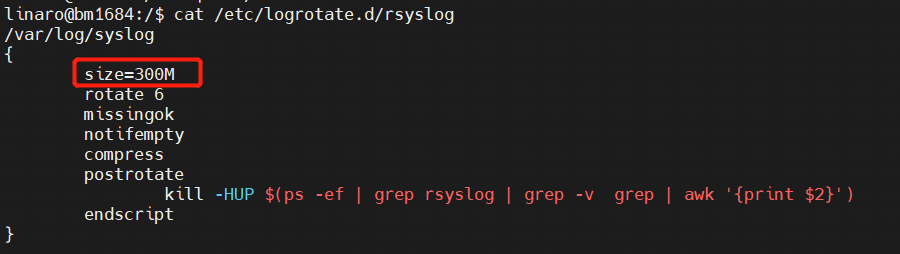
{kind=link}
但这里要注意的是，logroate是通过/etc/cron.daily/logrotate触发执行的，而只有当它执行时才会去检查上面这些规则文件， 所以如果只在上面配置文件里修改成hourly或者size 10M，并不能直接生效。需要首先sudo mv /etc/cron.daily/logrotate /etc/cron.hourly，让logrotate每小时执行一次，它才有机会去检查/etc/logrotate.conf文件，进而执行您修改后的更激进的设置。
3.3.4.3.27. 如何修改自动挂载点¶
BM1684X 的磁盘挂载点文件是/etc/fstab，但您并不能通过直接编辑这个文件来修改开机自动挂载磁盘。原因是为了支持多种启动方式和分区方案， BM1684X 上/etc/fstab是在开机时由ramdisk中的启动脚本从/etc/fstab.xxxx等文件中选一个复制出来的。所以如果要修改挂载点的话，通常的配置下您需要去修改/etc/fstab.emmc.ro这个文件。
而这个文件是位于read-only分区中，所以需要通过如下步骤修改：
sudo mount -o remount,rw /dev/mmcblk0p4 sudo cp /media/root-ro/etc/fstab.emmc.ro /media/root-ro/etc/fstab.emmc.ro.bak sudo vim /media/root-ro/etc/fstab.emmc.ro # 修改完成后： sudo reboot
注意请一定在修改前备份文件，并请慎重进行修改，因为如果挂载失败可能造成进不了系统的问题。比如不建议在fstab写上U盘之类可能被移除的设备。如果一定要开机自动挂载可移除存储设备，请在fstab里加上nofail选项，如下示例。也可以考虑加一个开机自动运行的服务或者udev规则来实现。
/dev/sda1 /var/lib/docker ext4 defaults,nofail 0 0
/dev/sda2 /var/lib/kubelet ext4 defaults,nofail 0 0
如果一旦重启后出现问题，请参考9.2节的描述进入recovery mode做修正。
3.3.4.3.28. 如何判断异常重启的原因¶
在/root/.boot/目录下，有很多以时间命名的txt文件，格式为“月-日-时-分-秒”，表示某次开机的时间，如11-02-19-38-51.txt，可以用xxd命令显示它的内容，如：
> sudo -i > cd /root/.boot > xxd 11-02-19-38-51.txt 00000000: 8200 0000
显示出的第一个字节，0x82，即为这次开机的原因。具体列表如下：
0x0-0x7F：预留
0x80：系统收到下电命令
0x81：系统使用拉复位管脚的方式进行重启
0x82：系统使用下电再上电的方式进行重启
0x83：芯片过热重启
0x84：看门狗超时重启
3.3.4.4. SM5参考方案¶
SM5作为一个半成品，需要客户进行二次开发，在BSP软件和外围设备上拥有很高的定制自由度，客户的需求也各有不同，所以在此我们提供一些参考方案，这些方案没有经过严格的产品化测试，客户可以酌情谨慎采用，集成到自己的方案中。请做好充足的测试后再进行实际产品的部署。
3.3.4.4.1. 本地刷机方案¶
SM5模组提供了SD卡和tftp两种刷机方式，详见SM5指南。客户可以选择两种方式来定制自己的刷机包：
使用上面提到的BSP SDK来创建刷机包，这种拥有最大的自由度，但需要学习相关脚本的使用；
将自己的程序提供给算能，由算能制作刷机包在模组出厂时刷好，这种比较适合大批量出货，不适合开发阶段频繁版本迭代；
当然客户也可以选择只刷算能的官方通用刷机包，然后再通过网络等方式把自己的业务应用部署上去。
在上述SD卡刷机包的基础上，这里再提供一种不依赖于SD卡的升级方案。这并不是一个完整的OTA方案，并不包含版本管理、分发等功能，仅仅只是提供拿到升级包后刷到SM5上这最后一公里的方案，客户仍然需要自行实现刷机包部署。也并不支持差分包的方式，主要只是为了方便把SD卡刷机包刷到SM5上。 操作步骤如下：
首先并不是所有的SD卡刷机包都支持这种方式升级，建议先与技术支持确认。主要是两个限制： a. 刷机包里包含的脚本要支持这种方式 b. 从SM5当在的版本，到刷机包里的版本，eMMC上的分区布局没有发生过变化
请把SD卡刷机包里的全部文件丢到SM5的/data目录下，效果如下，建议最好能做一下md5校验，确保文件正确：
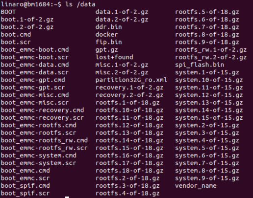然后输入如下命令，请务必核对输入的字母，如果有问题了修复起来比较麻烦，最好写到一个脚本文件里来执行
sudo -i echo -e "boot-recovery\n/DATA/" > /dev/mmcblk0p3
然后读取一下看是否符合预期：
cat /dev/mmcblk0p3 预期要能看到： boot-recovery /DATA/ 然后按ctrl+c结束
最后重启系统，请注意不要直接拔电源，以免文件损坏：
sync sudo reboot
正常情况下，重启后应该可以从串口log看到开始刷机了，此过程中请务必不要断电（SE5产品可以通过面板上的指示灯判断升级是否成功，请参考SE5产品手册；SM5产品只能通过串口log，或者等待几分钟后重新尝试ssh登入来确认）：
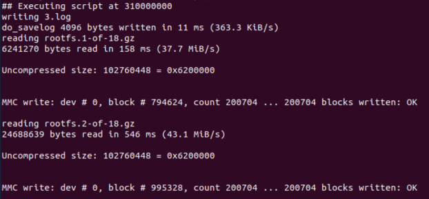刷机完成后，SM5会自动重启，待重新进入系统后可以通过bm_version命令查看版本号，确认升级是否成功。请注意/data分区并不会被清除，里面的文件都会保存下来。
如果过程中遇到问题，请参考SM5指南中关于recovery mode的介绍，通过串口终端进入recovery mode的命令行后，可以通过如下命令清除升级标记
mdev -s
dd if=/dev/zero of=/dev/mmcblk0p3 bs=512 count=1
sync
reboot -f
如果升级程序还没有清除eMMC上的数据，上述方式应该可以使您进入原来的系统。如果eMMC上的数据已经被破坏，甚至连recovery mode都进不去了，那么只能再通过SD卡刷机来恢复了。
3.3.4.4.2. 网络刷机方案¶
SM5指南上已经介绍了tftp刷机，但需要手工敲命令的方式，这里再提供一个便于自动化的方案： SM5的内核启动方式是u-boot去加载/boot目录下的boot.scr.emmc脚本，解析里面的命令，找到内核去启动。所以我们可以通过把tftp升级用的命令替换进这个脚本，让SM5一开机就自动进入tftp升级。只有当tftp升级成功完成时，才会把这个脚本刷回正常的启动脚本；如果升级失败，重启SM5就可以再次进行tftp升级。 脚本内容如下：
echo "set serverip 10.0.0.3; dhcp 0x310000000 \$serverip:boot.scr; set reset_after 1; source 0x310000000" > boot.txt
# 这里serverip要设置成tftp server的IP，SM5需要与这个server在同一个网关下
mkimage -A arm64 -O linux -T script -C none -a 0 -e 0 -n "Distro Boot Script" -d boot.txt boot.scr.emmc
sudo cp ./boot.scr.emmc /boot
sudo reboot
3.3.4.4.3. 图形界面¶
SM5可以通过如下几种方式得到图形界面，有时可以用来方便在板上做一些开发工作或者快速原型验证：
通过PCIe连接SM750/768芯片的显卡
通过USB连接FL2000芯片的HDMI dongle
不连接外部显示设备，在另一台主机上通过VNC登录
前两种连接外部显示设备的方案，可以通过如下方式来使能图形界面（建议使用xfce4，Debian 9仓库里的lxde可能会遇到拖拽窗口时死机的问题）：
sudo apt update
sudo apt install xfce4
sudo reboot
待重启后应该就可以看到图形界面了，通过USB键鼠即可操作，
需要再通过如下命令关闭休眠机制，以免遇到唤醒问题
xset s off -dpms
两种方式相比，更推荐SM750/768的方案，CPU占用率低。FL2000方案会至少用掉一个CPU core来刷新图像。 最后一种VNC的方式通过如下步骤来使能：
sudo apt update
sudo apt install xserver-xorg-video-dummy x11vnc xfce4
sudo cp xorg.conf /etc/X11/
sudo systemctl disable gfx-feeder
sudo reboot
sudo x11vnc -display :0 -auth /var/lib/lightdm/.Xauthority &
然后就可以在另一台主机上用$sm5_ip:0地址来VNC了
上述用到的xorg.conf文件如下：
Section "Device"
Identifier "Configured Video Device"
Driver "dummy"
VideoRam 256000
EndSection
Section "Monitor"
Identifier "Configured Monitor"
HorizSync 5.0 - 1000.0
VertRefresh 5.0 - 200.0
ModeLine "1920x1080" 148.50 1920 2448 2492 2640 1080 1084 1089 1125 +Hsync +Vsync
# Modeline "1280x800" 24.15 1280 1312 1400 1432 800 819 822 841
EndSection
Section "Screen"
Identifier "Default Screen"
Monitor "Configured Monitor"
Device "Configured Video Device"
DefaultDepth 24
SubSection "Display"
Depth 24
Modes "1920x1080"
# Modes "1280x800"
EndSubSection
EndSection
3.3.4.4.4. 用Perfetto工具分析性能¶
从2.3.1版本开始，SM5预装了Perfetto工具，可以通过如下步骤使用：
写一个Perfetto的配置文件，放到SM5上。配置文件描述了要抓取什么样的系统信息。可以参考下面的scheduling.cfg文件写法，这个配置文件会抓取系统进程调度的信息：
# One buffer allocated within the central tracing binary for the entire trace, # shared by the two data sources below. buffers { size_kb: 20480 fill_policy: DISCARD } # Ftrace data from the kernel, mainly the process scheduling events. data_sources { config { name: "linux.ftrace" target_buffer: 0 ftrace_config { ftrace_events: "sched_switch" ftrace_events: "sched_waking" ftrace_events: "sched_wakeup_new" ftrace_events: "task_newtask" ftrace_events: "task_rename" ftrace_events: "sched_process_exec" ftrace_events: "sched_process_exit" ftrace_events: "sched_process_fork" ftrace_events: "sched_process_free" ftrace_events: "sched_process_hang" ftrace_events: "sched_process_wait" } } } # Resolve process commandlines and parent/child relationships, to better # interpret the ftrace events, which are in terms of pids. data_sources { config { name: "linux.process_stats" target_buffer: 0 } } # 10s trace, but can be stopped prematurely. duration_ms: 10000
具体信息可以参考Perfetto的官方文档，https://perfetto.dev/docs/data-sources/cpu-scheduling，也可以在这里找到更多的配置文件参考：https://github.com/google/perfetto/tree/master/test/configs。
在SM5上执行sudo perfetto –txt -c scheduling.cfg -o scheduling.pftrace即开始抓取，当config文件中定义的duration_ms时间到后会自动结束，或ctrl+c杀掉perfetto进程也可以结束抓取。结束后会生成一个scheduling.pftrace文件。 打开https://ui.perfetto.dev，点左边的Open trace file，选择上面生成的scheduling.pftrace文件即可。w键放大，s键缩小，a键左平移，d键右平移，点击进程或cpu的色块可以在下面看到具体的描述：
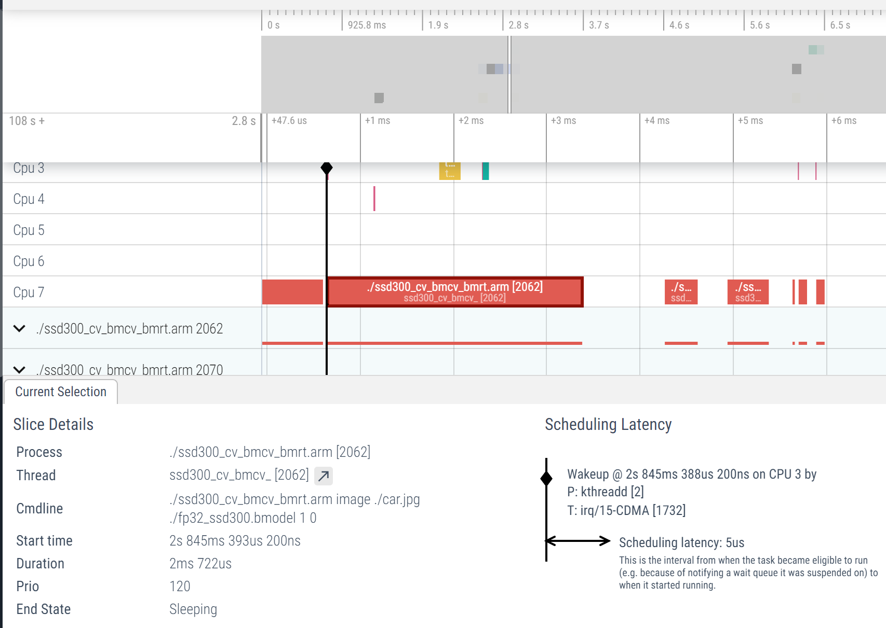如果想在应用程序里打点，跟上面的调度信息显示在同一个视图里，可以参考下面的写法，在你想要标记的段落开头调用atrace_begin_body(“foo_bar”)，结尾调用atrace_end_body。在配置文件中，增加一行 atrace_categories: “*”，比如加在scheduling.cfg中ftrace_config段落。
#include <stdio.h> #include <stdlib.h> #include <string.h> #include <unistd.h> #include <fcntl.h> #include <errno.h> #include <sys/ioctl.h> #include <math.h> #define ATRACE_MESSAGE_LENGTH 1024 int atrace_marker_fd = -1; #define WRITE_MSG(format_begin, format_end, name, value) { \ char buf[ATRACE_MESSAGE_LENGTH]; \ int pid = getpid(); \ int len = snprintf(buf, sizeof(buf), format_begin "%s" format_end, pid, \ name, value); \ if (len >= (int) sizeof(buf)) { \ /* Given the sizeof(buf), and all of the current format buffers, \ * it is impossible for name_len to be < 0 if len >= sizeof(buf). */ \ int name_len = strlen(name) - (len - sizeof(buf)) - 1; \ /* Truncate the name to make the message fit. */ \ printf("Truncated name in %s: %s\n", __FUNCTION__, name); \ len = snprintf(buf, sizeof(buf), format_begin "%.*s" format_end, pid, \ name_len, name, value); \ } \ write(atrace_marker_fd, buf, len); \ } void atrace_begin_body(const char* name) { WRITE_MSG("B|%d|", "%s", name, ""); } void atrace_end_body() { WRITE_MSG("E|%d", "%s", "", ""); } static void atrace_init_once() { atrace_marker_fd = open("/sys/kernel/tracing/trace_marker", O_WRONLY | O_CLOEXEC); if (atrace_marker_fd < 0) { // try debugfs atrace_marker_fd = open("/sys/kernel/debug/tracing/trace_marker", O_WRONLY | O_CLOEXEC); if (atrace_marker_fd < 0) { printf("trace_marker file not found\n"); } } } int main(int argc, char const *argv[]) { int i; atrace_init_once(); if (atrace_marker_fd < 0) return atrace_marker_fd; for (i = 0; i < 10; i++) { atrace_begin_body("user_foo_bar"); usleep(500 * 1000); atrace_end_body(); usleep(500 * 1000); } close(atrace_marker_fd); return 0; }
用perfetto抓取trace后，就可以找到你的tag叠加到时间轴上显示了，如下面user_foo_bar标记：
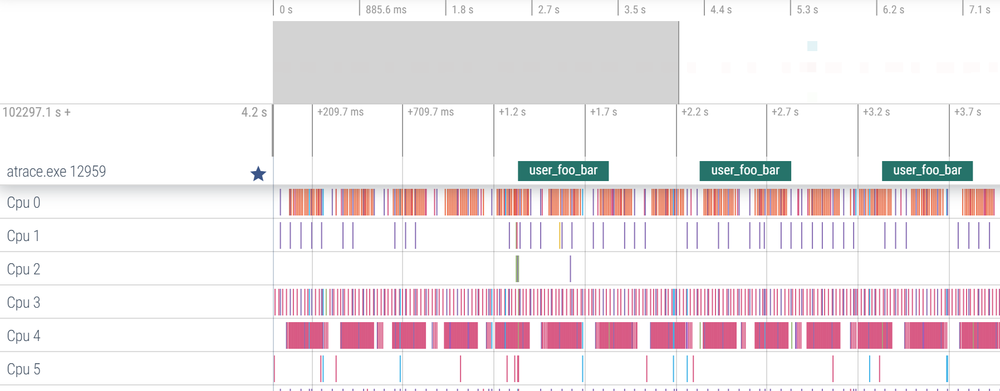如果想在内核态驱动里打点，可以参考如下的做法：
#include <linux/trace_events.h> 在想要标记的段落开头调用atrace_begin_body("foo_bar")，结尾调用atrace_end_body在配置文件中，增加一行 atrace_categories: “*”，比如加在scheduling.cfg中ftrace_config段落。用perfetto抓取trace后，效果跟上面用户态的一样。
3.3.4.4.5. 提高业务程序的实时性¶
答：如果您的业务对实时性比较敏感，您可以考虑使用如下几种优化的方式：
Linux内核使用虚拟内存，对用户空间的内存（包括栈、代码段、数据段以及使用函数malloc或mmap动态分配的内存）使用惰性分配的策略， 如果实时进程访问的虚拟页没有映射到物理页，那么会触发页错误异常，影响实时性。所以需要尽量避免频繁申请释放内存，malloc出来的内存 可以先做一次memset再送进实时性敏感的流程
对于有明显周期性的实时性敏感业务，可以考虑使用dealine调度器：
struct sched_attr attr; memset(&attr, 0, sizeof(attr)); attr.size = sizeof(attr); attr.sched_policy = SCHED_DEADLINE;//设置调度类型 attr.sched_runtime = 700000000;//设置runtime，纳秒 attr.sched_deadline = attr.sched_period = 2000000000;//设置deadline和period，纳秒 ret = sched_setattr(0, &attr, flags); if (ret < 0) { perror("sched_setattr failed"); exit(-1); }打开内核抢占，在linux-linaro-stable/arch/arm64/configs/bitmain_bm1684_asic_defconfig文件末尾新增：
# CONFIG_PREEMPT_NONE is not set # CONFIG_PREEMPT_VOLUNTARY is not set CONFIG_PREEMPT=y 重新编译内核并替换到板子上重启后，输入uname -a,应该显示：
Linux bm1684 4.9.38-bm1684-v10.4.0-00550-g4ad0f96b7016-dirty #4 SMP PREEMPT Thu Mar 10 08:56:25 CST 2022 aarch64 GNU/Linux （默认非抢占内核显示：Linux bm1684 4.9.38-bm1684-v10.4.0-00550-g4ad0f96b7016-dirty #5 SMP Thu Mar 10 09:44:04 CST 2022 aarch64 GNU/Linux）
将某几个CPU核从系统隔离出来，然后将实时性敏感人物绑定到这些核上，可以尽量避免这些任务被系统的其它事物干扰。以CPU5和6为例，大致有如下步骤：
修改u-boot的内核启动参数，增加“isolcpus=5,6”字段，这样除了最基础的一些系统任务外，调度器不会主动把任务分配到这两个CPU上。可以通过如下命令确认
cat /sys/devices/system/cpu/isolated
修改irqbalance的规则文件（/etcdefault/irqbalance）：
IRQBALANCE_BANNED_CPUS="E0" （原值为80，因为我们默认将PCIe的中断单独绑定到了CPU7上）
重启后生效，可以通过如下命令观察效果：
cat /proc/interrupts
通过taskset -cp 5,6 $pid命令将制定的进程绑定到这两个CPU上，设置完后要等到下次这个进程被调度执行时才会生效。如果是多线程， 每个线程的ID要单独设置（可以通过ps -T查看）。
ps -o pid,spid,psr,stat,comm -A 可以在PSR列显示进程最近一次执行时所在的CPU
3.3.4.4.6. 4G模块方案¶
3.3.4.4.7. 5G模块方案¶
3.3.4.4.8. 如何增加板类型¶
答：客户使用我们发布的BSP SDK开发，新增板类型时可以参考本节操作：
客户修改控制单板PCB版本和BOM版本的硬件电阻。MCU代码会采集电压值确定硬件的版本，并将该值写入到指定地址，让BM1684可以获取
由于当前arm-trusted-firmware部分代码未开源，需要联系我们提供适配新的PCB版本和BOM版本的bl2.bin。获取后替换bsp-sdk/install/soc_bm1684_asic/prebuilt/bl2.bin
修改BSP SDK中的u-boot目录下代码，在bsp-sdk/u-boot/include/configs/bm1684-asic.h中增加新的板类型， 然后修改bsp-sdk/u-boot/board/bitmain/bm1684/vexpress64.c中的pcb_info数组和dtb_mapping数组，增加该pcb对应的板类型及该板类型在u-boot中使用的dtb，如下图所示
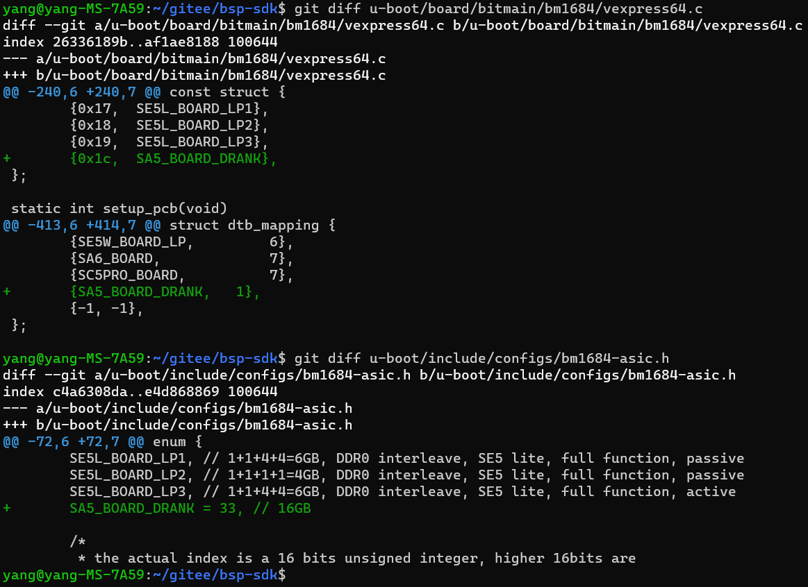修改BSP SDK中的linux-linaro-stable目录下代码，新增对应的dts，并修改makefile。以增加SA5 16G DDR板类型为例， 在bsp-sdk/linux-linaro-stable/arch/arm64/boot/dts/bitmain目录下新增bm1684_asic_hds_drank.dts文件，内容为相应的配置
#include "bm1684.dtsi" #include "bm1684_mm_16g.dtsi" #include "bm1684_asic_hds.dtsi"
然后在bsp-sdk/linux-linaro-stable/arch/arm64/boot/dts/bitmain/Makefile目录新增bm1684_asic_hds_drank.dts的编译选项，如下图所示
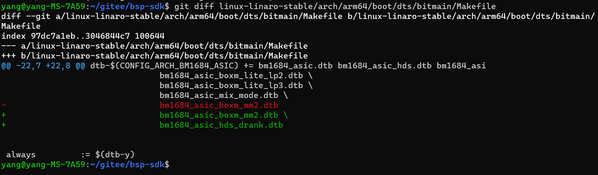修改BSP SDK中的bsp-sdk/ramdisk/build/bm1684_asic/workspace/multi.its.base，新增dts的fdt和config描述。如下图所示，在红色框上面，绿色部分为新增代码。
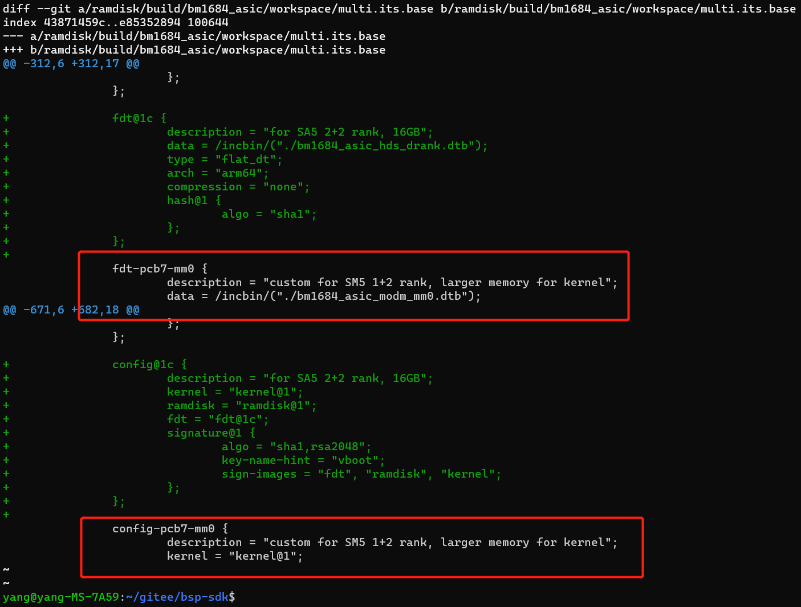
3.3.4.4.9. 定制化rootfs¶
答：
x86环境安装qemu-user-static
sudo apt-get install qemu-user-static
准备arm linux根文件系统 arm linux根文件系统可以直接下载干净的版本（从我们gitee获取） 或者从运行的arm单板上进行备份获取。 arm单板上备份根文件系统命令：
sudo tar -cvpzf rootfs.tgz --exclude=/proc --exclude=/mnt --exclude=/sys --exclude=/rootfs.tgz /
解压根文件系统命令：
tar -xvpfz rootfs.tgz -C ./rootfs
构建虚拟机
创建rootfs目录，在rootfs下执行根文件系统解压命令，解压完成后，copy qemu执行命令到arm文件系统中
sudo cp /usr/bin/qemu-arm-static usr/bin/ sudo cp /usr/bin/qemu-aarch64-static usr/bin/
在rootfs录下创建proc、sys、host目录 在rootfs所在目录下创建ch-mount.sh文件
#!/bin/bash function mnt() { echo "MOUNTING" sudo mount -t proc /proc ${2}proc sudo mount -t sysfs /sys ${2}sys sudo mount -o bind /dev ${2}dev sudo mount -o bind /run ${2}run sudo mount --bind / ${2}host #sudo mount -vt tmpfs shm ${2}dev/shm #sudo mount -t /dev/shm ${2}dev/shm sudo chroot ${2} } function umnt() { echo "UNMOUNTING" sudo umount ${2}proc sudo umount ${2}sys #sudo umount ${2}dev/shm sudo umount ${2}dev sudo umount ${2}run sudo umount ${2}host } if [ "$1" == "-m" ] && [ -n "$2" ] ; then mnt $1 $2 elif [ "$1" == "-u" ] && [ -n "$2" ]; then umnt $1 $2 else echo "" echo "Either 1'st, 2'nd or both parameters were missing" echo "" echo "1'st parameter can be one of these: -m(mount) OR -u(umount)" echo "2'nd parameter is the full path of rootfs directory(with trailing '/')" echo "" echo "For example: ch-mount -m /media/sdcard/" echo "" echo 1st parameter : ${1} echo 2nd parameter : ${2}执行ch-mount.sh，创建虚拟机
sudo ./ch-mount.sh -m rootfs/
虚拟机准备完毕，可以在虚拟的arm环境上进行相应的操作，创建用户、编译arm版本、安装软件……
卸载虚拟机 在虚拟机环境中执行exit退出。然后执行命令卸载挂载的相关文件。
sudo ./ch-mount.sh -u rootfs/
3.3.4.4.10. 使用eFuse和SPACC进行加解密¶
答：BM1684芯片内的eFuse的基础使用请参考SM5手册的3.6节。这里仅介绍其中一个特殊的secure key区域。用户可以在secure key和其副本区域分别烧写同一个密钥，然后在地址1中的bit[0]和bit[1]烧写1以使能secure key功能，这样之后软件将不再能从secure key区域读出密钥原文，这个密钥只能被SPACC硬件模块用作AES、DES加解密之用。以上操作都是不可逆的，即secure key无法被改写，这个功能也无法被关闭。
因为早期硬件上的一个小问题，欲使用此功能的话，请先做如下检查：
#在板子上执行
sudo busybox devmem 0x50010004
#返回值是个16进制字串，如0x00018A05
#只看最后一位数字，如果是1，则可以正常使用此功能，
#如果是5，需要对板子做一下rework，请联系技术支持返厂修改
在烧写时，如果先烧写了secure key enable bit，则secure key区域马上变成不能被读出（总是读出为0，但仍可以写入）。如果先烧写了secure key，此时它仍可以被读出，直到烧写secure key enable bit后才变成不能被读出。
Secure Key在eFuse中的字节序如下，我们以128bit的AES key举例。现有一128bit的AES key如下：
0x00 0x01 0x02 0x03 0x10 0x11 0x12 0x13 0x20 0x21 0x22 0x23 0x30 0x31 0x32 0x33
在eFuse中的存储顺序为:
地址 |
内容(HEX) |
2 |
0x03020100 |
3 |
0x13121110 |
4 |
0x23222120 |
5 |
0x33323230 |
如果想要使用底层接口编程读写eFuse（这个并不是必须的，也可以直接使用SPACC提供的接口，详见后面SPACC的部分），打开/dev/bm_efuse节点，通过如下两个ioctl对eFuse原始数据进行读写。ioctl参数为一个结构体，其中addr即为0到127的eFuse地址，val用于存放读取和写入的32bit值：
#define EFUSE_IOCTL_READ _IOWR('y', 0x20, struct efuse_ioctl_data)
#define EFUSE_IOCTL_WRITE _IOWR('y', 0x21, struct efuse_ioctl_data)
struct efuse_ioctl_data {
uint32_t addr;
uint32_t val;
};
读取：
int file = open("/dev/bm_efuse", O_RDWR);
struct efuse_ioctl_data data;
int ret = 0;
data.addr = address;
ret = ioctl(file, EFUSE_IOCTL_READ, &data);
if (ret < 0) {
ERR("EFUSE_IOCTL_READ fail,errno=0x%x", errno);
close(file);
return ret;
}
close(file);
return data.val;
写入：
int file = open("/dev/bm_efuse", O_RDWR);
struct efuse_ioctl_data data;
int ret = 0;
data.addr = address;
data.val = val;
ret = ioctl(file, EFUSE_IOCTL_WRITE, &data);
if (ret < 0)
ERR("EFUSE_IOCTL_WRITE fail ,errno=0x%x\n", errno);
close(file);
SPACC是BM1684芯片内置的一个硬件加速模块，支持AES、DES、SM4和SHA1、SHA256、Base64。这里介绍SPACC搭配eFuse使用的一个特殊功能：客户可以在eFuse的secure key区域烧录一把密钥，这把密钥写入后是不能再被软件读出的，只能被SPACC用作加解密运算。结合客户自定义ID使用，可以用作产品授权等功能。以下是eFuse和SPACC结合使用时的API。
查看secure key使能状态和客户自定义ID
#查看secure key使能状态 sudo cat /sys/devices/platform/50028000.efuse/secure-key #查看客户自定义ID sudo cat /sys/devices/platform/50028000.efuse/uid
烧写secure key和客户自定义ID 为方便使用，烧写secure key和客户自定义ID，可以不适用前述的RAW API，而是使用下面的nvmem接口，重启后生效：
#切换到root用户 sudo -i #解锁eFuse烧录限制 echo 0 > /sys/devices/platform/50028000.efuse/nvmem-lock #烧录key echo 000102030405060708090a0b0c0d0e0f111213141516171819101a1b1c1d1e1f > /sys/devices/platform/50028000.efuse/secure-key #烧录客户自定义ID echo 0123456789abcdef0123456789abcdef > /sys/devices/platform/50028000.efuse/uid
如您的key为128bit长度，可仅烧写128bit，如：
echo 000102030405060708090a0b0c0d0e0f > /sys/devices/platform/50028000.efuse/secure-key
客户自定义ID可烧录少于128bit的任意长度，如烧录4byte ID：
echo 01234567 > /sys/devices/platform/50028000.efuse/uid
如何使用SPACC SPACC已经集成到Linux AF_ALG Crypto Framework中，关于如何使用Linux Crypto Framework，可参考 Linux Crypto Framework 。代码可参考 libkcapi ，也可直接使用libkcapi。 如需使用secure key加密，请在调用socket函数时，将salg_name写成带有secure key后缀的cipher名称，如：
struct sockaddr_alg sa = { .salg_family = AF_ALG, .salg_type = "skcipher", .salg_name = "cbc(aes)" };
更改为
struct sockaddr_alg sa = { .salg_family = AF_ALG, .salg_type = "skcipher", .salg_name = "cbc(aes-secure-key)" };
如您使用libkcapi，请在调用初始化函数时，将ciphername参数设置为带有secure-key后缀的cipher类型，如：
kcapi_cipher_init(&handle,"cbc(aes)", 0);
更改为：
kcapi_cipher_init(&handle,"cbc(aes-secure-key)", 0);